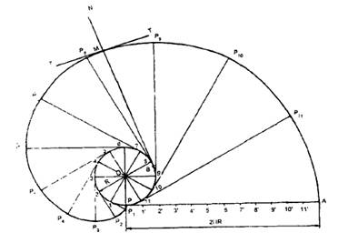
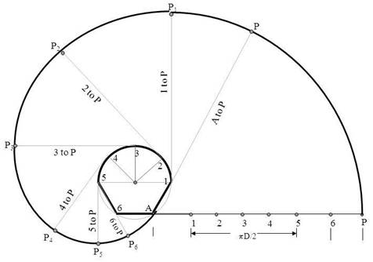

INVOLUTES:
It is a locus of a free end of a string when it is wound round a circular pole.
§To draw an involute of a given circle of radius R.
Construction:
1. With O as centre & radius R, draw a circle.
2. Taking P as straight point, draw a tangent PA equal in length to the circumference of the circle.
3. Divide the line PA and the circle in to the same number of equal parts & number the points.
4. Draw tangents to the circle at the points 1,2,3 etc and locate the points P1,P2,P3 etc and such that 1P1= P11, 2P2 = P21 etc.
5. A smooth curve through the points P, P1, P 2 etc., is the required involute.

Figure.
§a pole is of a shape of half hexabon and semicircle. astring is to be wound having length equal to the pole perimeter. draw path of free end p of string when wound completely.
(Take hex 30 mm sides and semicircle of 60 mm diameter.)
